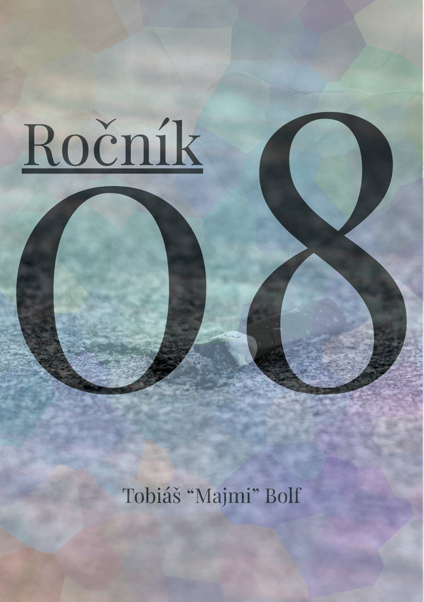

Růže ve vlasech
V jejich vlasech leží růže —
sundat ji nikdo nemůže.
Leží ve vlasech dál,
sundat bych se ji bál.
Číst celou báseň →
sundat ji nikdo nemůže.
Leží ve vlasech dál,
sundat bych se ji bál.
Majmi (2008) je student, básník a pozorovatel světa kolem sebe. Ve své tvorbě se dotýká otázek identity, svobody, samoty a křehké krásy každodennosti. Píše, aby porozuměl — sobě, ostatním i době, ve které žije.
Kontaktovat autoraTobiáš „Majmi“ Bolf
autor

Ročník 08 je sbírka básní o dospívání, hledání smyslu a místě člověka ve světě, který se neustále mění. Verše vznikaly v tichu i v hluku, v noci i za dne — jako záznamy myšlenek, které si zasloužily být napsány.